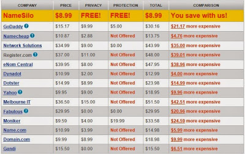

Namesilo review
My namesilo review can help you decide if it is good, reliable or not. You can buy domain names at $8.99 with an option for free privacy protection.
They offer cheap domain names daily.
You can buy domain names at $8.99 with an option for free privacy protection.
They offer cheap domain names daily.
Their offers are so good you may want to buy. They are known to be the best domain registrar.
But before you do that please read our review here.
For your information, this post is based on our experience with the company.
For aged domains, you can buy it at $1 domain in auctions tab. Read below for more details.
Choosing the Top domain registrar is an important step in creating a website. In this review, I'm going to share a very good domain service on the internet.
But before you do that please read our review here.
For your information, this post is based on our experience with the company.
For aged domains, you can buy it at $1 domain in auctions tab. Read below for more details.
Choosing the Top domain registrar is an important step in creating a website. In this review, I'm going to share a very good domain service on the internet.
Excellent registrar! Quality service although with low pricing.
Affordable Review @ $8.99
Namesilo started its company since the year 2009 and they offer their cheapest domain names. They focus on domain registry and not offering kinds of hosting services.
I think Namesilo web hosting is possible in the future.
They run their business in Phoenix, Arizona. I trust them and will buy more domains.
I found them to be reliable. I never had a problem with them although they are not perfect.
I'm happy with their service, I even bought argyletryit.com for $8.99. I think people use it due to low pricing.
They address a lot of complaints due to the high cost of domain names.
ICANN accredited Namesilo for its excellent service.
As of today, they have over 20,000 loyal customers around the world.
Why ICANN accreditation is important?
With ICANN accreditation, you can expect the best service. Namesilo follows all the rules and regulations imposed by ICANN review.
Let's compare Namesilo pricing with other Name Registrars
If you buy from their service I'm pretty sure you can save money online with bulk buying.
*Prices are based on our last visit to the site.
Compare it vs Namecheap? I think you know the difference.
Good prices and structure if you buy in bulk.
Imagine buying 100-1000 domains....
Imagine buying 100-2000 domains....
How much can you save?
Great domains with great prices.
As a customer, I have good experience with this company.
I have 50 domains in my account in this company. I think I will add more in the future when my customer grows.
What we like about their services is that they don't have hidden fees.
They have domain defender. Prevents changes unless you have answered 5 security questions. Can you suggest other name registrars with this feature?
You'll notice they don't have much advertising because they rely on the word of mouth.
Read also: Why Separate Name Registrar and Hosting?
Free Whois Privacy protection for life: Privacy protection is always free. (e.g. hide your name and other details). Namecheap.com offer it in the first year only. This is a new way to attract more customers.
The company provides this free feature as long as you own the domain.
This is one of the best features they give to their customers.
No Upsells:
I like Namesilo because they don't have upsells. They focus only on domain hosting. They don't have constant upsell. I hate other registrars because they always send emails for you to buy something.
They are different from other companies.
Bulk domain savings allows you to save more! It is straight forward.
Fixed price: There is no need to find discount or renewal coupons because the price is fixed.
Other registrars don't offer a discount on their renewal.
all Namesilo prices are already discounted every year.
Visit the site